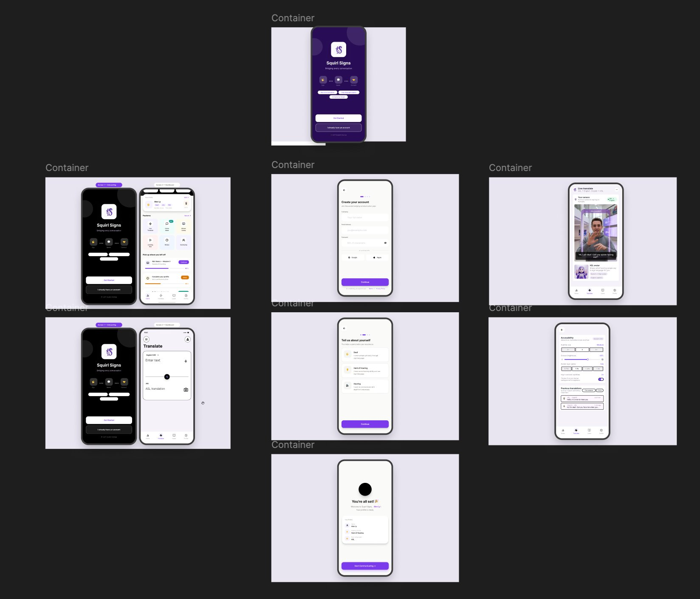

Squirl Signs — ASL Translation App
Designing a mobile-first communication platform for deaf and hard-of-hearing users.
The Prototype
Below is a full overview of the Figma prototype screens we designed during the competition. The flows cover the splash screen, onboarding for each user type, account creation, the ASL translate feature, live camera translation, and accessibility settings.

The Problem
Over 430,000 Canadians are deaf or hard-of-hearing. The existing tools for real-time communication are fragmented: some require the other person to already know ASL, others are clunky text-based solutions that break natural conversation flow. No single product addressed all three user types that exist in this space: fully Deaf users, hard-of-hearing users, and hearing users communicating with them.
Our Research Process
We didn't have direct access to deaf or hard-of-hearing users. The project ran during exam season with a one-week timeline, which made recruiting community members impossible. We were transparent about that constraint and designed our research approach around what we could actually do.
Audited existing ASL apps, captioning tools, and hearing-aid companion apps. The single biggest gap: no existing product handled all three user types in one unified flow.
Wore noise-cancelling headphones in a busy public environment to experience communication barriers firsthand. Not a substitute for real user research — but it gave us directional insight that shaped every design decision after it.
Watched videos and read content from deaf creators and advocates to understand how the community talks about existing tools, what frustrates them, and what they actually want from technology.
Defined three distinct profiles: fully Deaf, hard-of-hearing, and hearing allies. Each has different onboarding needs, trust thresholds, and feature priorities.
The Hardest Decision
The live ASL camera translation feature was the most contested design decision on the team. It touched three separate risk areas simultaneously.
Real-time ASL recognition requires significant ML infrastructure. As a startup, committing to this feature in v1 could sink the roadmap before the product found product-market fit.
An ASL translation that gets it wrong doesn't just frustrate users — it can lead to genuine miscommunication for people who rely on it in important situations.
Deaf users have often been burned by accessibility technology that overpromises. If the product launches with a feature that underperforms, it loses the community's trust entirely.
Our recommendation: ship a manual input translation mode first to build trust and gather real usage data. Position the live camera feature as a clearly-labelled beta with explicit accuracy caveats.
What I'd Do Differently
If I had two weeks instead of one during exam season, I would have prioritized recruiting even three people from the deaf or hard-of-hearing community for short interviews. The specific assumption I was most afraid was wrong: whether users would actually trust an AI translation enough to use it in situations that matter — a medical appointment, a job interview, a conversation with a landlord.
On the commercial side, I'd have explored the AODA compliance angle more deeply. Many Canadian employers are legally required to provide accessible communication tools. Squirl Signs could be sold to organizations as a compliance solution, opening an enterprise revenue stream alongside the consumer app.